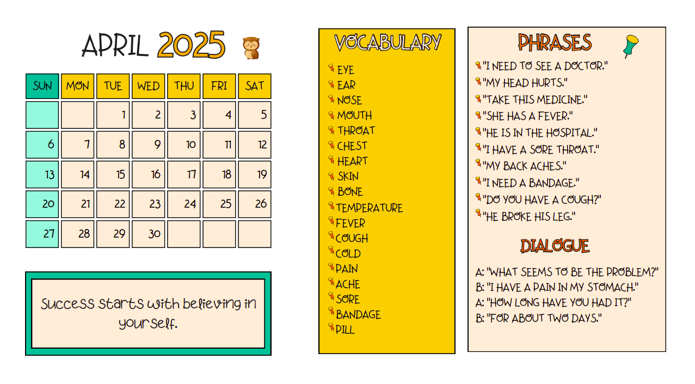

Iesakām
Latvijas Pilsoniskā alianse ir veikusi apkopojumu par biedrību un nodibinājumiem pieejamo
finansējumu.
Apkopojumā ietverta informācija par:
- ministriju un to padotības iestāžu deleģēšanas un līdzdarbības līgumiem, kuru izpilde 2025. gadā un vēlāk uzticēta biedrībām un nodibinājumiem;
- valsts budžeta un Eiropas Savienības fondu atbalsta programmām, uz kurām biedrības un nodibinājumi var pieteikties vai varēs pretendēt nākotnē.

Kalendārs 2024/2025
Apskati ikmēneša ierakstus, kas palīdzēs tev uzlabot valodas prasmes.
Apskatīt kalendāru
Iekļaušana un daudzveidība
Kas ir Erasmus+ prioritāte "Iekļaušana un daudzveidība"?
Erasmus+ programmā izglītības, mācību, jaunatnes un sporta jomā 2021. – 2027. gadam kā galvenā prioritāte ir izvirzīta vienlīdzīgu iespēju un piekļuves veicināšana, iekļaušana, daudzveidība un taisnīgums, kas paredz:
- Iekļaujošu pieeju mobilitātes un sadarbības aktivitāšu īstenošanu, sasniedzot iespējami daudz dalībnieku;
- Šķēršļu, ar kuriem var saskarties dalībnieki ar ierobežotām iespējām, novēršanu;
- Iekļaujošas vides sekmēšanu, veicinot taisnīgumu un vienlīdzību atbilstoši ikviena vajadzībām.